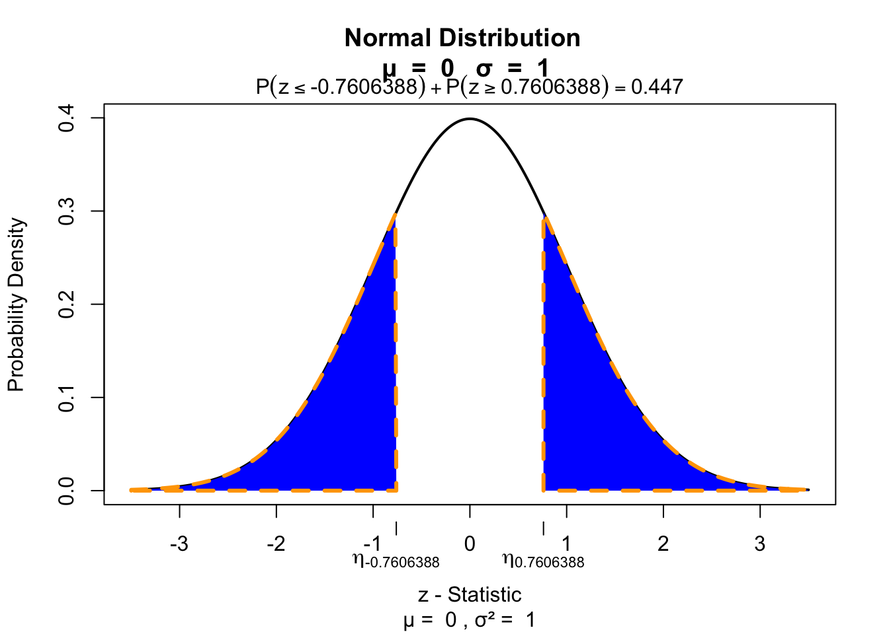

set.seed(3562534)
n <- 20
factor <- rep(c("Ecstasy","Alcohol"),each=n/2)
dummy <- ifelse(factor == "Ecstacy", 0, 1)
b.0 <- 23
b.1 <- 5
error <- rnorm(n, 0, 1.7)
depres <- b.0 + b.1*dummy + error
depres <- round(depres)
data <- data.frame(factor, depres)
Ecstasy <- subset(data, factor=="Ecstasy")$depres
Alcohol <- subset(data, factor=="Alcohol")$depres
data <- data.frame(Ecstasy, Alcohol)Wilcoxon signed-rank test
Paired 2 samples
Wilcoxon signed-rank test

The Wilcoxon signed-rank test is a nonparametric alternative to the paired samples t-test. It assigns + or - signs to the difference between two repeated measures. By ranking the absolute differences and summing these ranks for the positive group, the null hypothesis is tested that both positive and negative differences are equal.
Simulate data
Example
Calculate T
# Calculate difference in scores between first and second measure
data$difference = data$Ecstasy - data$Alcohol
# Calculate absolute difference in scores between first and second measure
data$abs.difference = abs(data$Ecstasy - data$Alcohol)
# Remove observations where the difference is 0
data <- data[data$difference != 0, ]
# Create rank variable with place holder NA
data$rank <- rank(data$abs.difference)
# Assign a '+' or a '-' to those values
data$sign <- sign(data$Ecstasy - data$Alcohol)The data
Calculate \(T_+\)
# Calculate the sum of the positive ranks
T_pos <- sum(data$rank * (data$difference > 0))
T_pos[1] 18.5# Calculate N without 0 (no differences).
n <- nrow(data)
n[1] 7Calculate \(\bar{T}\) and \({SE}_{T}\)
\[\bar{T} = \frac{n(n+1)}{4}\]
T_mean <- (n*(n+1))/4
T_mean [1] 14# T_mean is the middle point between the minimum and maximum possible value for T
T.min <- 0; T.min[1] 0T.max <- sum(1:n); T.max[1] 28mean(c(T.min, T.max))[1] 14\[{SE}_{T} = \sqrt{\frac{n(n+1)(2n+1)}{24}}\]
SE_T <- sqrt( (n*(n+1)*(2*n+1)) / 24)Calculate Z
\[z = \frac{T_+ - \bar{T}}{{SE}_T}\]
z <- (T_pos - T_mean)/SE_T
z[1] 0.7606388Test for significance
visualize.norm(c(z,-z), section="tails")
Effect size
\[r = \frac{z}{\sqrt{N}}\]
Here \(N\) is the number of observations.
N <- 20
r <- z / sqrt(N)
r[1] 0.170084